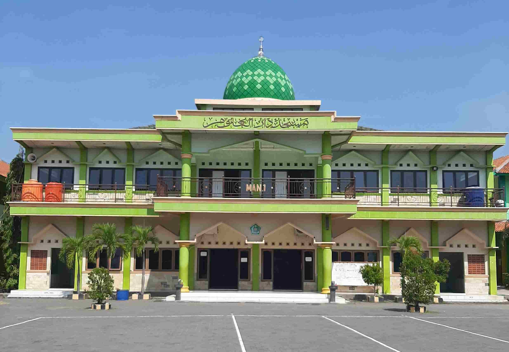

Profil Diri

Sri Lestari, S.Pd.
"Mengajar matematika bukan sekadar tentang angka dan rumus, melainkan melatih logika, memecahkan masalah, dan membentuk karakter masa depan."
Pendidikan Sebelumnya:
Universitas Sebelas Maret (UNS)
Pendidikan Saat Ini:
PPG Prajabatan Matematika - Universitas Muhammadiyah Semarang
Tim Pembimbing PPL
Dosen Pembimbing Lapangan (DPL)
Dr. Venissa Dian Mawarsari, M.Pd.
Guru Pamong
M. Ally Firdaus, S.Ag., M.Pd.
Lokasi & Instansi
LPTK
Universitas Muhammadiyah Semarang
Tempat menempuh studi Pendidikan Profesi Guru (PPG) Prajabatan pada program studi Matematika.
📍 Buka di Google Maps
Sekolah Mitra PPL
MA Negeri 1 Kota Semarang
Lokasi pelaksanaan Praktik Pengalaman Lapangan (PPL) Mandiri dan implementasi modul ajar matematika kelas XI 8.
📍 Buka di Google Maps